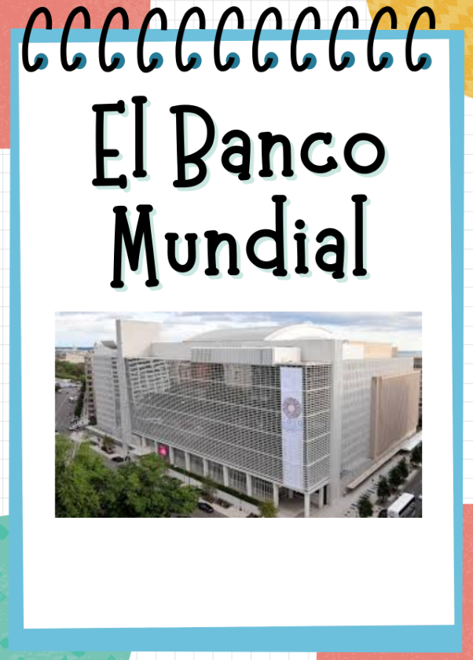

Práctica 1: Organismos Internacionales y Educación
Análisis en profundidad sobre cómo instituciones como el Banco Mundial ejercen su influencia, tanto económica como técnica y normativa, en las políticas educativas de los diferentes países.
Ver Trabajo Completo